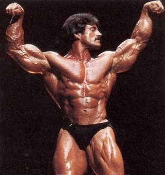
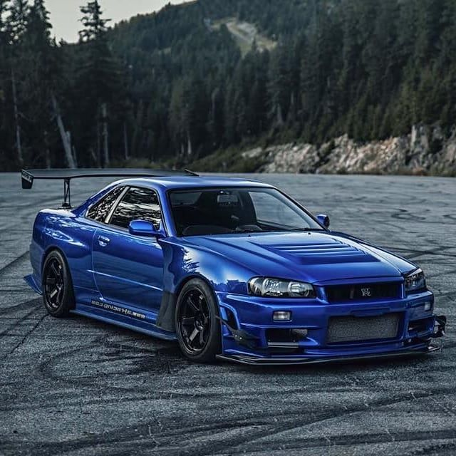

Programming Background
The first language I encountered was Python. I came across it because I was curious about software development and had no clue how words that people typed on a screen turned into functional programs.
I did not learn much in these initial stages, I was just dipping my toe in the water. Eventually I learned more programming skills when I embarked on my C++ learning journey a few months down the road.
That is where I learned about loops, functions, classes, and all that good stuff. The projects I have created can be found on my GitHub in the GitHub link above.
Why I Want To Become a Software Developer
I want to become a software developer because I love to code. Ever since I wrote my first program which was basically 'print("Hello World")', I wanted to learn more. It was very intriguing to know
that typing lines of code can turn into huge applications that took teams of brilliant minds to put together. I also really enjoyed playing with and working on computers from an early age which
eventually led me to discover the art of coding. What pleased me the most was taking a blank empty space and turning it into a functional program that could solve problems or make someone's day easier.
Hobbies and Interests

Mike Mentzer

Nissan R34
 Moon
Moon
The hobby/interest I love the most is bodybuilding. It is a dream of mine and has been a dream of mine to become a bodybuilder ever since I was a young child. I actively work towards this goal every single
day. I also really like cars, more specifically I like older Japanese cars from the 80s, 90s, 2000s. The image above is a Nissan R34 GTR, which is a legendary Japenese car. Another passion of mine
is learning about all things pertaining to astronomy. Space is incredibly fascinating to me and there is so much out there that we have no clue about. The vastness of the universe and the distance between
celestial objects is so vast that it blows my mind everytime I think about it. The image above of the moon was taken by me through my telescope during the recent supermoon. A supermoon occurs when the Moon's
orbit is closest to Earth at the same time the Moon is full.